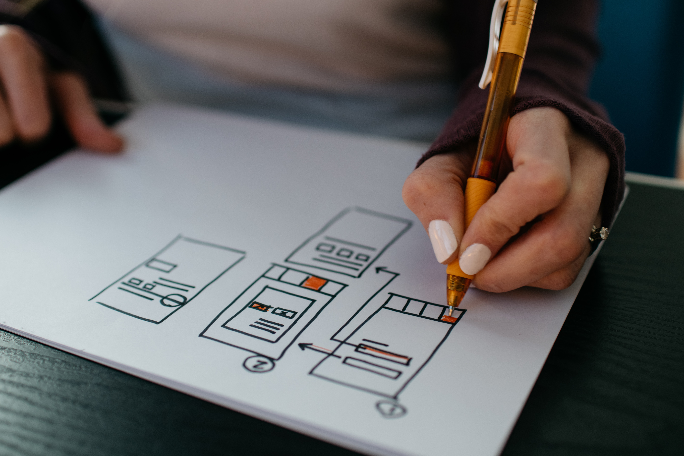
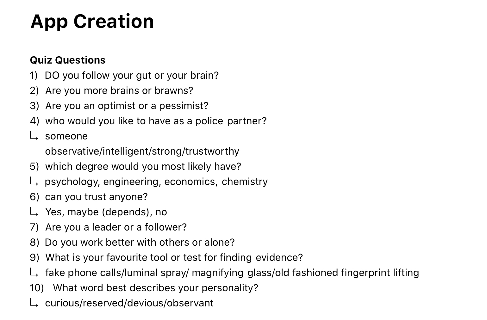
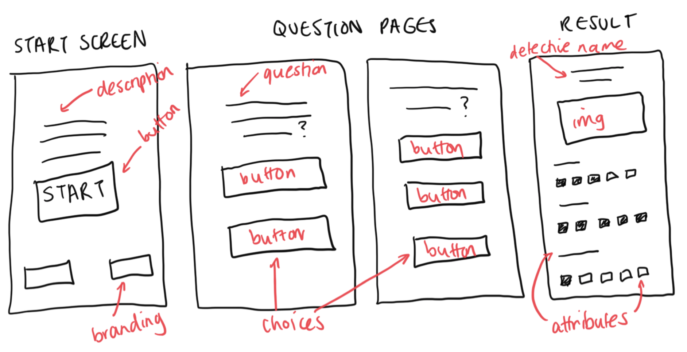
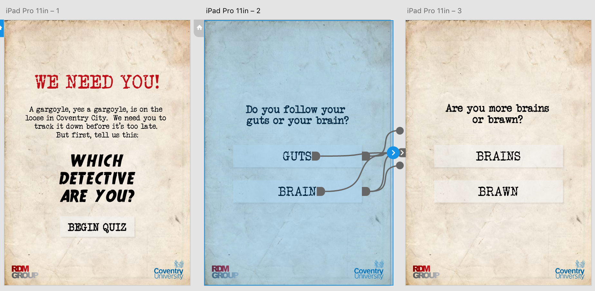
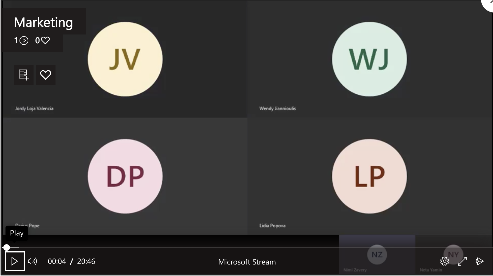

This week I have started to think about creating the app. The application is for the visitors to use before beginning their experience in the driverless cars, and it is a quiz app, which will tell them which type of detective they are in this game, based on their answers to personality based questions. To begin with, I came up with ten questions, related to personality and being a detective.

This quiz will also work well whilst visitors are waiting to use the driverless cars, as there would only be two cars at the open day. From this, I created the app wireframes, and have begun to prototype the app on Adobe XD.


It is important that the app is easy and simple to use, and also includes the RDM Group and Coventry University's branding, as well as having a detective theme.

At the end of this week, we also arranged a group call to see how everyones progress was going. Due to the coronavirus, we have all been working remotely instead of at university, and therefore communication is key to the success of our project. We used Microsoft teams to do a group call, and this was really useful as it records the whole conversation, so that we can listen over any details we may have missed. We each shared our work so far, and what our goals were for the next week. This was a great way to re-examine everyone's responsibilities, and adjust and add responsibilities as needed.